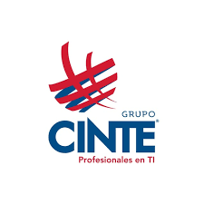
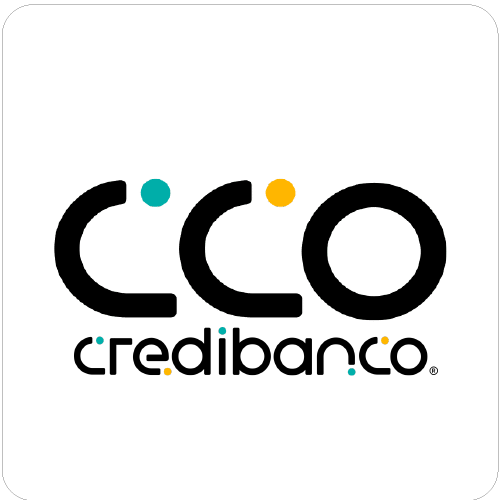
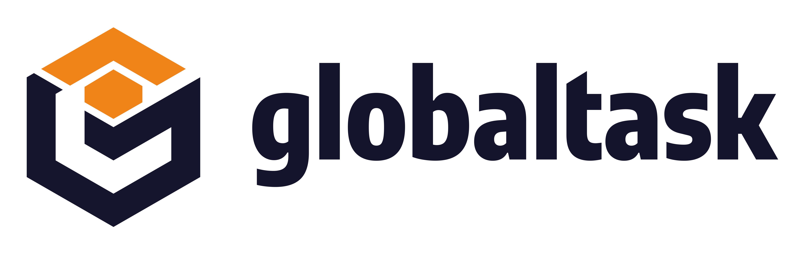
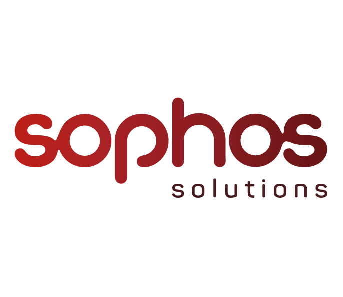
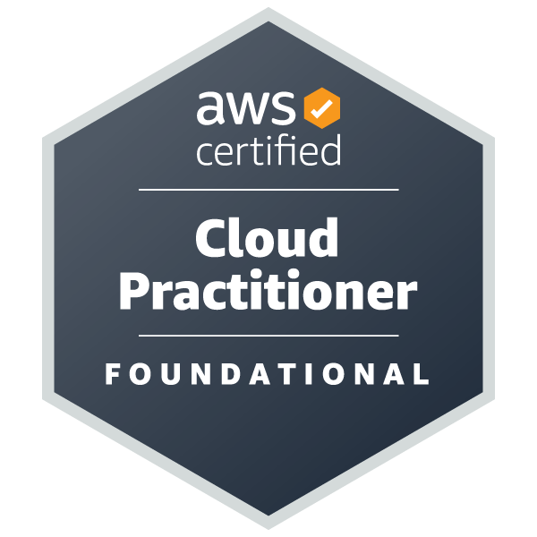
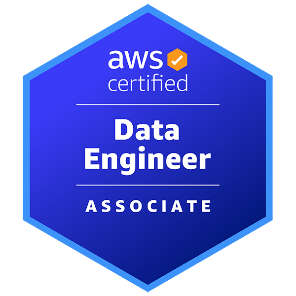

La IA mueve lo seguro. Una persona decide el resto.
WAE es una firma de Data & AI Engineering. Conectamos correo, hojas de cálculo, ERP y banco en flujos que operan solos donde es seguro y se detienen donde hace falta criterio.
Conciliación de facturas
Fichas de demostración con datos ficticios
Entra
Retenido · decisión humana
Cerrado
Hoy el trabajo no tiene tablero.
Los procesos críticos viven entre bandejas de correo, archivos compartidos y sistemas que no se hablan. Nadie ve el estado completo, y las excepciones no tienen dueño.
- Sin dueñoCorreos que alguien reenvía para que otro los resuelva
- Sin fuente únicaHojas de cálculo que sostienen la operación sin estar declaradas
- Sin conexiónERP, WMS, CRM y banco cruzados a mano
- Sin controlesPresión por usar IA antes de tener datos, reglas y responsables
Un proceso crítico, diagnosticado en 10 días hábiles.
Antes de elegir tecnología medimos la operación real y diseñamos la arquitectura ejecutable para integrarla, automatizarla y operarla con controles.
- Alcance
- Un proceso, un área, un conjunto acotado de sistemas
- Muestra
- Hasta 10.000 registros representativos
- Entorno
- Sandbox aislado. Nunca en producción
- Entrega
- Mapa actual, matriz de riesgo, blueprint, prototipo y caso económico con supuestos explícitos
- Días 1–3Inmersión. Levantamiento del proceso real, muestra de datos y mapa del estado actual con su matriz de riesgo.
- Días 4–5Diseño. Blueprint de la arquitectura objetivo, comparado con alternativas más simples.
- Días 6–8Prototipo. Un flujo crítico funcionando en sandbox, verificable por su líder técnico.
- Días 9–10Caso económico. Supuestos explícitos, sesión ejecutiva y propuesta de implementación.
Controles antes que autonomía.
Cada componente de IA opera dentro de límites escritos. Y compite contra reglas e integraciones simples: entra solo cuando aporta más que ellas.
- PermisosEl sistema solo toca lo que tiene declarado.
- Umbral de confianzaBajo el umbral, no actúa: retiene.
- Límite económicoSobre el monto tope, decide una persona.
- Aprobación humanaEn el punto exacto, con el contexto preparado.
- AuditoríaEntrada, decisión, responsable y hora quedan registrados.
Una ficha, seis tramos.
El método en seis pasos: el mismo trabajo pasa por cada tramo, y ninguno se salta.
- 01DiagnosticarLínea base medida sobre una muestra real.
- 02DiseñarArquitectura proporcional, comparada con alternativas.
- 03ValidarPrototipo en sandbox con criterios acordados.
- 04ConstruirImplementación incremental con revisión y pruebas.
- 05GobernarPermisos, umbrales, aprobación humana y trazabilidad.
- 06OperarMonitoreo, documentación y transferencia.
Para consultoras e integradores: capacidad con supervisión.
El Pod Administrado de Data Engineering suma una célula a su proyecto con arquitectura y control de calidad incluidos. No es alquiler de perfiles.
Evaluar un pod| Qué recibe | Pod WAE | Staffing |
|---|---|---|
| Evaluación técnica de los perfiles | Incluida | Variable |
| Supervisión arquitectónica | Incluida | A cargo de su líder |
| Estándares y revisión de código | Incluidos | A cargo de su equipo |
| Documentación y gestión de conocimiento | Incluidas | No garantizadas |
| Continuidad ante rotación | Plan de empalme | Se reinicia |
Lo que podemos mostrar. Y lo que todavía no.
WAE publica solo lo que puede respaldar. Separamos la experiencia previa del equipo de los proyectos contratados por WAE.
Experiencia previa del equipo




Organizaciones donde integrantes del equipo participaron antes de WAE. No son clientes de WAE.
Certificaciones del equipo


Casos contratados por WAE
- Ranura libre
Aún no hay casos contratados por WAE para publicar. Preferimos una ranura vacía a un caso inventado.
Un núcleo de cinco ingenieros en Bogotá, con experiencia en datos, integración, cloud y automatización, dirigido por el fundador de WAE.
No prometemos ahorros no medidos, automatización total ni retornos garantizados.
Ponga un proceso sobre el tablero.
Cuéntenos cuál proceso le cuesta más hoy. Respondemos con una propuesta de diagnóstico de alcance cerrado.